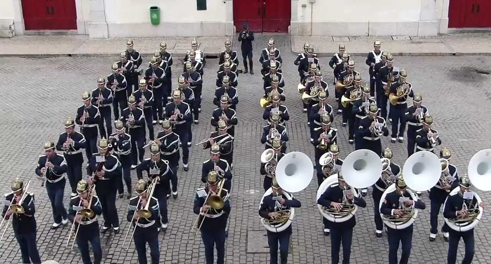

Sopros
História dos instrumentos de sopro
Os instrumentos de sopro têm uma longa história na música, começando com flautas feitas de ossos em civilizações antigas. Na Idade Média, eram usados em contextos religiosos, e durante o Renascimento, vimos o surgimento de trompetes e trombones. O Barroco trouxe uma expansão, com Bach e Handel incorporando trompetes, flautas e oboés em suas composições.
No século XIX, houve avanços tecnológicos, resultando em instrumentos mais refinados. O século XX viu a evolução contínua com novos materiais e técnicas, sendo fabricados com plástico e metais. Esses materiais ajudaram a tornar esses instrumentos mais acessíveis e aperfeiçoar o som emitido por eles. Hoje, os instrumentos de sopro são essenciais em diversos gêneros musicais, desde a música clássica até o jazz e o rock, enriquecendo a cena musical global.
Quais são os instrumentos de sopro?


Você sabia?
Os músicos que tocam instrumentos de sopro também desenvolvem o foco. Isso ocorre porque uma nota errada pode se destacar muito — diferente de uma guitarrista, por exemplo, que se errar uma nota ou um Power Chords pode passar despercebido em razão das distorções e dos efeitos e aplicados.
Nesse sentido, aprender a lidar com a pressão psicológica é mais uma das vantagens da prática dos instrumentos de sopro. Além disso, como já citamos, o controle da respiração é primordial ao tocar. Por isso, o músico aprende a relaxar e a fazer inspirações profundas mesmo quando está nervoso.
O desenvolvimento dessa habilidade auxilia na vida pessoal e profissional, pois proporciona mais confiança, sendo muito útil, por exemplo, durante momentos de pressão no trabalho.